14.1 隐马尔科夫模型
概率模型(probabilistic model)将学习任务归结于计算变量的概率分布，在概率模型中，利用已知变量推测未知变量的分布称为推断
概率模型的学习，基于训练样本来估计变量分布的参数往往很困难，为了便于研究高效的推断和学习算法，需要一套能简洁紧凑地表达变量间关系的工具，概率图模型(probabilistic graphical model)就是一类用图来表达变量相关关系的概率模型：
- 有向无环图：称为有向图模型或贝叶斯网
- 无向图：称为无向图模型或马尔科夫网 隐马尔科夫模型(Hidden Markov Model,简称HMM)是结构最简单的动态贝叶斯网，这是一种著名的有向图模型，主要用于时序数据建模，广泛应用于语音识别，自然语言处理
隐马尔科夫模型中的变量可分为两组，第一组是状态变量\(\{y_1,y_2,…,y_n\}\),其中\(y_i \in \mathcal{Y} \)表示第i时刻的系统状态，通常假定状态是隐藏的，不可被观测的，因此亦称状态变量为隐变量(hidden variable).第二组是观测人变量\(\{x_1,x_2,…,x_n\}\),其中\(x_i \in \mathcal{X} \)表示第i时刻的观测值.系统通常在多个状态\(\{s_1,s_2,…,s_n\}\)之间转换，因此状态变量的取值通常是有N个取值的离散空间，观测变量可以是离散型也可以是连续型，我们假定\(\mathcal{X}\)为\(\{o_1,o_2,…,o_n\}\)
一个例子：语音识别中，观测值为语音信号，状态变量是文字
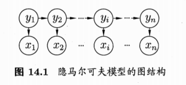
箭头表示依赖关系，任何时刻观测变量的取值仅依赖于状态变量，即\(x_t 由 y_t \)决定，与其他状态变量和观测变量无关，同时t时刻的状态\(y_t\)仅取决于t-1时刻的状态\(y_{t-1}\),与其余n-2状态无关，这就是所谓的马尔科夫链(Markov chain),系统下一时刻的状态仅由当前时刻状态决定，不依赖于任何以往的状态，所以所有变量的联合概率分布为：
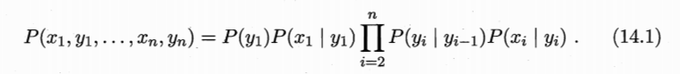
除了结构信息，欲确定一个隐马尔科夫模型还需要以下三组参数：
- 状态转移概率：模型在各个状态间转换的概率通常记为矩阵:
\(A=[a_{ij}]_{N\times N}\)
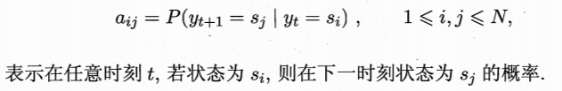 - 输出观测概率：模型根据当前状态获得各个观测值的概率，通常记为矩阵：
\(B=[b_{ij}]_{N\times N}\)
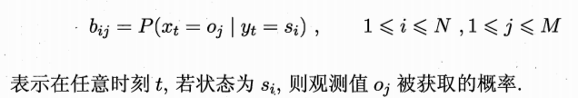 - 初始状态概率：通常记为
\(\pi = (\pi_1,\pi_2,…,\pi_N)\)
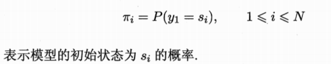
通过指定状态空间，观测空间和上述三组参数就能确定一个隐马尔科夫模型，通常用参数\(\lambda = [A,B,\pi]\)来指代，给定\(\lambda\),它按如下过程产生观测序列\(\{x_1,x_2,…,x_n\}\)
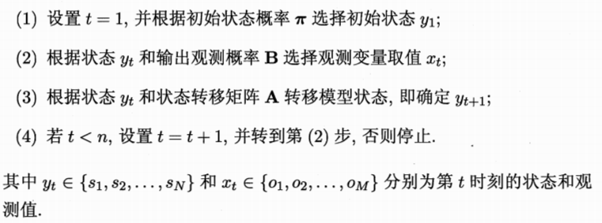
实际应用中，人们常关注三个基本问题
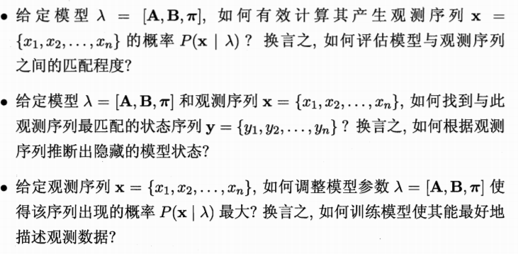
14.2 马尔科夫随机场
马尔科夫随机场(Markov Random Field,简称MRF)是典型的马尔科夫网，图中每个结点表示一个或一组变量，结点之间的边表示两个变量间的依赖关系，马尔科夫随机场有一组势函数，亦称为因子，是定义在变量子集上的非负实函数，主要用于定义概率分布函数
对于图中结点的一个子集，若其中任意两结点间都有边连接，则称该结点子集为一个团(clique),若在一个团中加入任何另外一个结点都不再形成团，则称之为极大团
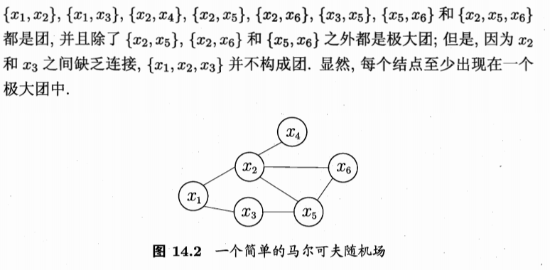
在马尔科夫随机场中，多个变量之间的联合概率分布能基于团分解为多个因子的乘积，每个因子仅与一个团相关
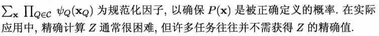
显然若变量个数较多，则团的数目将会很多，于是，联合概率可基于极大团来定义，假定所有极大团构成的集合为\(\mathcal{C}^*\),则有
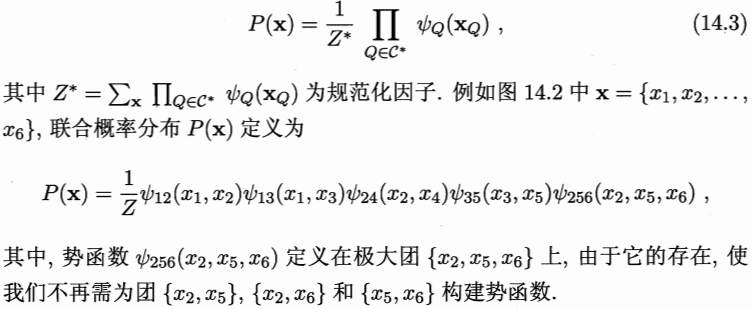
那么在马尔科夫随机场中如何得到条件独立性？，需要借助分离的概念，若从结点集A中的结点到B中的结点都必须经过结点集C中的结点，则称结点集A和B被结点集C分离，C称为分离集(separating set)
- 全局马尔可夫性：给定两个变量子集的分离集，则这两个变量子集条件独立
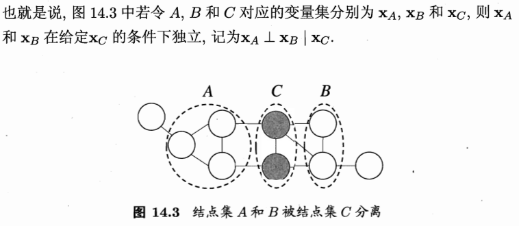
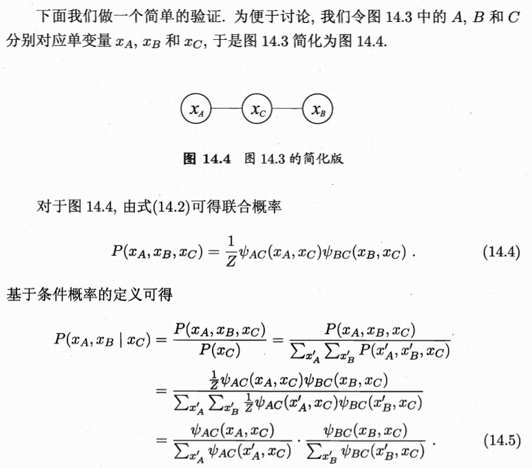
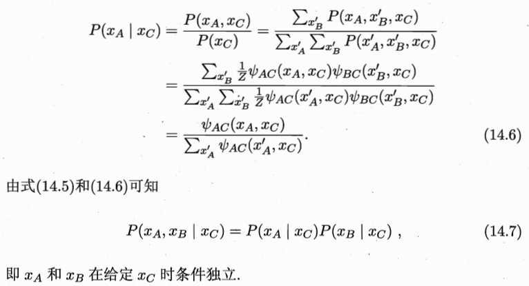
由局部马尔科夫性可得到两个推论：
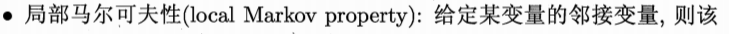
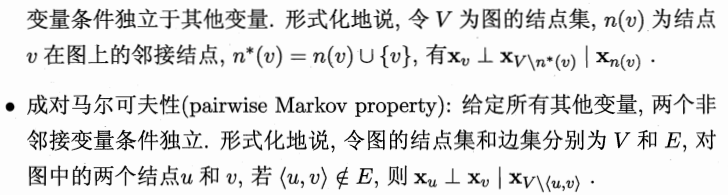
现在我们来考虑马尔科夫随机场的势函数，势函数\(\phi_Q(x_Q)\)是用来刻画变量集\(x_Q\)中变量之间的相互关系，应是非负函数且在所偏好的变量取值上有较大函数值
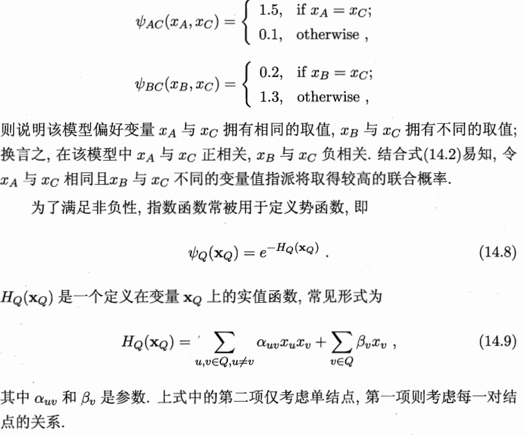
14.3 条件随机场
条件随机场(Conditional Random Field,简称CRF)是一种判别式无向图，生成式模型是直接对联合分布建模，而判别式模型则对条件分布进行建模，，前面的隐马尔科夫模型和马尔科夫随机场都是生成式模型，而条件随机场则是判别式模型
条件随机场试图对多个变量在给定观测值后的条件概率进行建模，若令\(\vec{x} = \{x_1,x_2,…,x_n\} \)为观测序列，\(\vec{y} = \{y_1,y_2,…,y_n\} \)为与之对应的标记序列，则条件随机场的目标是构建条件概率模型\(P(\vec{y}\ |\ \vec{x})\),需注意的是，\(\vec{y}\)可以是结构型变量
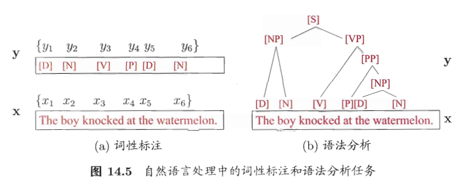
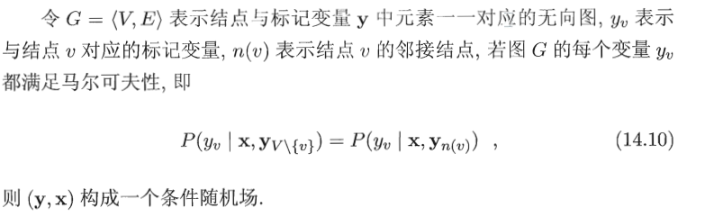
理论上说，图G可具有任意结构，只要能表示标记变量之间的条件独立性关系即可，但在现实应用中，尤其对标记序列建模，最常用链式结构，即链式条件随机场(chain-structured CRF)
条件随机场使用势函数和图结构上的团来定义条件概率\(P(\vec{y}\ |\ \vec{x})\)，通过选用指数势函数并引入特征函数
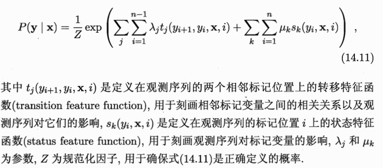
我们需要定义合适的特征函数以刻画数据的一些可能成立或期望成立的经验特性，以词性标注任务为例：
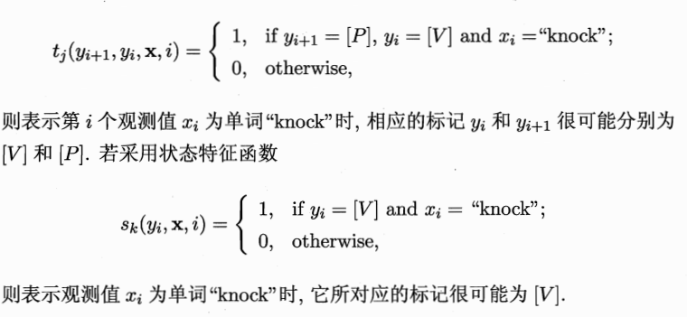